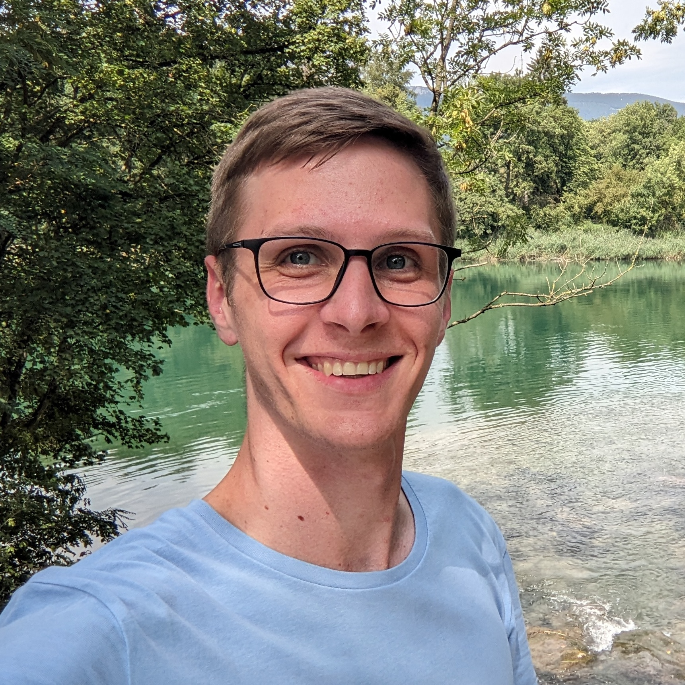

|
Nicolai Hermann I'm a research assistant at The Perception, Display, and Fabrication Group at IDSIA-USI, in Lugano (Switzerland), where I'm working on 3D scene reconstruction. |
 |
{kind=link}
Research |
|
|
Puzzle Similarity: A Perceptually-guided Cross-Reference Metric for Artifact Detection in 3D Scene Reconstructions
Nicolai Hermann, Jorge Condor, Piotr Didyk ICCV, 2025 Project Page / arXiv / Code / Data / Supplemental Automatic 2D quality map generation for novel views to assess the quality of 3D scene reconstructions beyond supervised areas. |

|
Perceptually-Driven Neural Inpainting for Seamless 3D Reconstructions
Supervision: Jorge Condor and Piotr Didyk. Awarded the "Best Thesis Award" from the Premio Swiss Engineering Ticino foundation. In my master’s thesis, I improved novel Scene Reconstruction methods, such as Gaussian Splatting. I introduced a new approach that assesses reconstruction quality by leveraging the input multiview content as priors to evaluate novel views. I then demonstrated the method’s effectiveness by devising a strategy that hallucinates incorrectly reconstructed parts of a scene. |